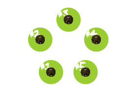

Whenever Peter feels bored, he places some bowls, containing one bean each, in a circle. After this, he takes all the beans out of a certain bowl and drops them one by one in the bowls going clockwise. He repeats this, starting from the bowl he dropped the last bean in, until the initial situation appears again. For example with 5 bowls he acts as follows:

So with $5$ bowls it takes Peter $15$ moves to return to the initial situation.
Let $M(x)$ represent the number of moves required to return to the initial situation, starting with $x$ bowls. Thus, $M(5) = 15$. It can also be verified that $M(100) = 10920$.
Find $\displaystyle \sum_{k=0}^{10^{18}} M(2^k + 1)$. Give your answer modulo $7^9$.
solve(max_k=4) → ?solve(max_k=1000000000000000000) → ?solve(max_k=10000) → ?